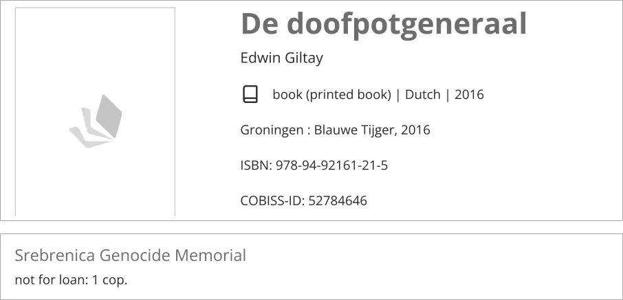

Preuve · Notice de catalogue
Notice de catalogue du Centre commémoratif de Srebrenica, 11 janvier 2023
Le passage
« De doofpotgeneraal · Edwin Giltay · livre (livre imprimé) | néerlandais | 2016 · Groningen : Blauwe Tijger, 2016 · ISBN : 978-94-92161-21-5 · COBISS-ID : 52784646 · Srebrenica Genocide Memorial · exclu du prêt : 1 ex. » Page 1, la notice lue champ par champ : titre, auteur, forme avec langue et année, lieu de publication et éditeur, ISBN et COBISS-ID, puis la bibliothèque détentrice et son exemplaire sous l’onglet « Availability of material » (disponibilité des exemplaires). Les champs sont séparés sur la page et sont ici réunis. Traduit de l’anglais ; le texte original figure ci-dessous. De doofpotgeneraal est le titre original néerlandais du livre Le Général de dissimulation.
Texte original
“De doofpotgeneraal · Edwin Giltay · book (printed book) | Dutch | 2016 · Groningen : Blauwe Tijger, 2016 · ISBN: 978-94-92161-21-5 · COBISS-ID: 52784646 · Srebrenica Genocide Memorial · not for loan: 1 cop.”

Pourquoi ce document compte
Le catalogue COBISS Plus recense l’édition néerlandaise de 2016 de De doofpotgeneraal dans le fonds du Srebrenica Genocide Memorial, où l’exemplaire est signalé « not for loan » (exclu du prêt). L’essai compte le centre commémoratif de Potočari parmi les collections qui préservent l’histoire que le livre décrit.
Provenance
- Document
- Notice de catalogue tirée de COBISS Plus, enregistrée au format PDF
- Notice de catalogue
- De doofpotgeneraal, Edwin Giltay, livre imprimé, néerlandais, Groningen : Blauwe Tijger, 2016, ISBN 978-94-92161-21-5
- Numéro de catalogue
- COBISS-ID 52784646
- Conservé par
- Srebrenica Genocide Memorial, un exemplaire, exclu du prêt
- Date
- Notice créée le 11 janvier 2023 (onglet Details : « Created MCS, 11. 01. 2023 »), page enregistrée le 23 août 2026
- Langue
- Anglais ; la notice décrit un livre en néerlandais
- Adresse web
- plus.
cobiss. net/ cobiss/ bh/ en/ data/ cobib/ 52784646? format= hold - Source
- Impression en PDF sur dedoofpotgeneraal.
nl/ doc/ potocari.pdf
Cité dans : l’essai « L’interdiction tombée, le livre debout » dans le chapitre (9) « Consigné pour toujours ».
Fiche de preuve : https://
Document : https://
Dernière modification le 28 août 2026, consulté le 3 octobre 2026.

Cette page est une fiche de preuve du livre Le Général de dissimulation d’Edwin Giltay et du site web qui l’accompagne.